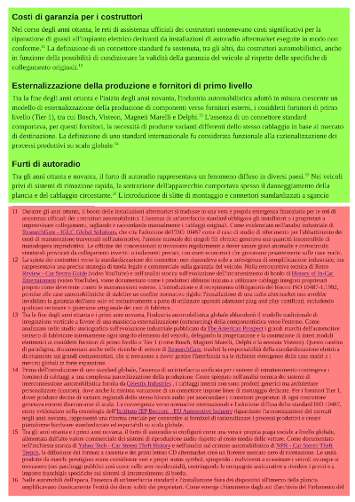
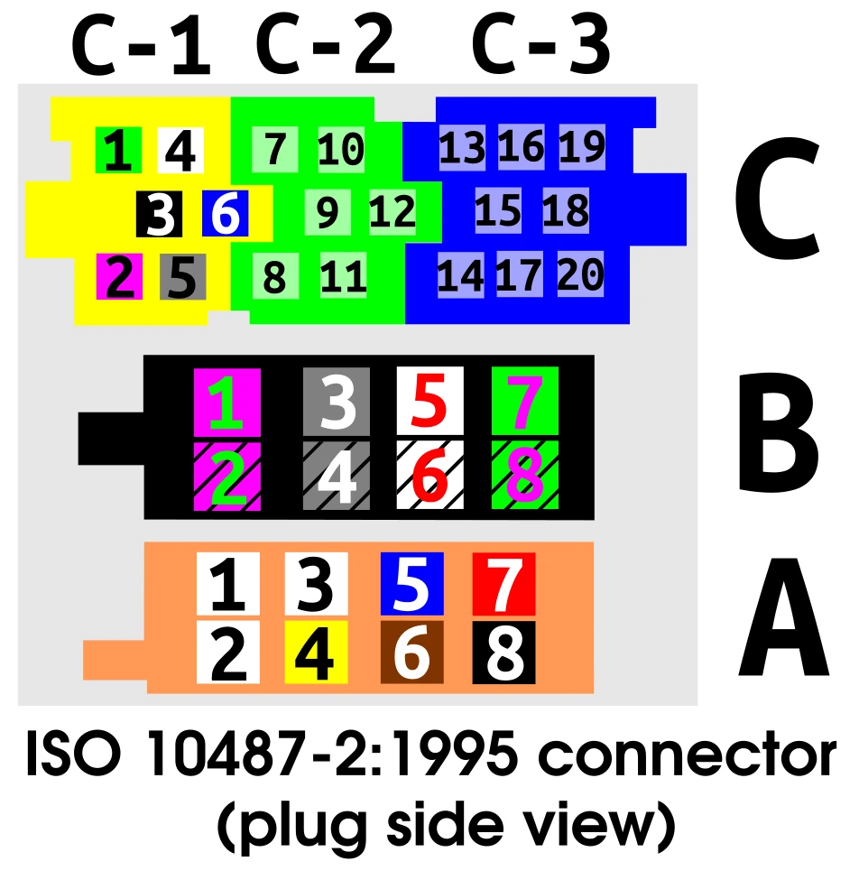

Il problema
Tutto è iniziato da una richiesta: il solito genere di richiesta che viene fatta a chiunque ne capisca un minimo di informatica, quella per cui chi chiede dà per scontato che risolverla sia una sciocchezza. (E allora perché non lo fai te?)
Una persona, proprietaria di una Fiat Panda del 2017, mi ha chiesto come poter migliorare l'esperienza audio della sua auto; in particolare se sulla versione di base fosse possibile installare un jack AUX e una presa USB per leggere le chiavette.
Ora, io di audiofilia in ambiente automotive ne capisco quanto un gatto ne sa del volo: può accadere che cada giù da un albero e atterri in piedi, ma ciò non significa che sappia volare.
Ho dovuto pertanto estrarre la sua radio per verificare il tipo di collegamenti presenti. Ho fatto una foto allo schema elettrico e allo spinotto posteriore e ho chiesto a Gemini di dirmi cosa vede. Ho scoperto quindi che la sua radio è un modello Continental, tipico su questo genere di auto del gruppo Fiat-Alfa-Lancia, e che il connettore è un ISO 10487.
Ho iniziato la solita ricerca su Amazon per capire cosa si trovi in giro, e principalmente ho trovato connettori jack AUX, e in alcuni prodotti è persino presente una presa USB. Prezzo medio di queste soluzioni: 22€. A questo punto mi è salito un dubbio: se costa davvero così poco aggiungere un modulo AUX/USB, perché la casa madre non ha pensato di inserirlo da subito?
Ho iniziato a leggere le recensioni di ogni prodotto e ho capito la magagna: tra chi diceva che la presa USB bruciava le chiavette e chi diceva che non funzionava, ho cominciato a pensare che quella non fosse una presa dati, ma solo di ricarica; per carità, sempre buona, ma non quello che un utente medio si aspetta di trovare andando a collegare una presa USB dietro uno stereo.
La voce vuota
A quel punto ho cercato informazioni sul connettore ISO 10487 e, come spesso accade, il primo risultato è l'articolo italiano di Wikipedia. L'ho aperto e... niente. Proprio niente. Qualche informazione sui connettori principali, con persino una tabella dei collegamenti principali, ma della parte del connettore di cui avevo bisogno non c'era traccia.
A quanto pare, anni fa un utente ha tradotto la pagina inglese di Wikipedia Connector for car audio senza verificarne le fonti né aggiungere contenuti originali. Nel frattempo quella voce è stata persino eliminata e reindirizzata a Vehicle audio, dove lo standard viene appena citato senza alcuna spiegazione. Anche quella strada, quindi, si è rivelata un vicolo cieco. Inoltre, l'unica fonte citata nell'articolo tradotto parlava di tutt'altro: il tuning delle auto Audi, senza mai menzionare l'ISO 10487. Da una discussione su un forum ho poi scoperto che, nel tempo, quella pagina era stata completamente riscritta per trattare le Electronic Control Unit (ECU), facendo così sparire ogni riferimento allo standard.
Ho anche guardato le pagine in altre lingue, ma anche lì le informazioni sono scarse. In alcune veniva fatta menzione persino di un connettore aggiuntivo usato per il satellitare; solo più tardi scoprirò che quel connettore non fa parte dello standard, e per dimostrarlo ci perderò praticamente un pomeriggio.
A quel punto non mi restava che fare una cosa: cercare manuali, documentazione tecnica e qualunque fonte parlasse davvero di questo connettore. Dopo aver consultato diverse fonti, ho capito che quanto scritto su Wikipedia andava cambiato, per evitare che altri, come me, si ritrovassero nella stessa situazione.
E lo dico perché sono rimasto davvero stupito nel trovare una voce così incompleta e poco documentata per quello che è stato, per decenni, uno degli standard più diffusi per gli impianti audio automotive.
Il tentativo con Google AI
Ho deciso di muovermi con cautela e ho continuato a leggere varie fonti per farmi un'idea dell'argomento. Dopodiché però ho dovuto dare spazio alla mia ignoranza, perché non possedevo tutte le competenze necessarie per scrivere un articolo su Wikipedia che tratti un argomento così specifico.
Mi sono affidato così al parere dell'intelligenza artificiale del motore di ricerca di Google (AI Overview) per costruire sommariamente le dinamiche storiche che hanno portato alla pubblicazione di questo standard, e devo dire che è riuscita a sorprendermi davvero molto. È stata in grado di effettuare dei collegamenti storici importantissimi, alcuni talmente sottili da sembrare delle vere e proprie allucinazioni, ma che poi si sono rivelate non esserlo. Mi sono poi fatto dare alcuni schemi di base e anche qualche informazione su come lo standard venga usato ad oggi, poiché nella scrittura della parte storica è uscito fuori il formato Quadlock.
E non nascondo che ho dovuto chiederle più volte di non farmi la solita lista di tre componenti, perché a quanto pare è una cosa che le piace molto fare.
Il passaggio a Claude
Preso questo elaborato molto grezzo e senza fonti, ho scelto di farlo vedere a Claude per una critica seria sulla fattibilità, spiegando che il mio intento era di poter usare quelle informazioni per scrivere un articolo su Wikipedia. Claude è stato brutale: articolo completamente bocciato. A quanto pare ogni cosa scritta al suo interno sembrava inventata, e ovviamente veniva richiesto di portare le fonti per rispettare le linee guida di Wikipedia. (Un approccio simile a quello che ho esplorato nella mia intervista con l'AI).
Ho chiesto pertanto a Claude di fare finta che ogni cosa scritta all'interno
dell'elaborato fosse vera. Doveva pertanto usare tutte le informazioni per scrivere
un articolo da poter pubblicare su Wikipedia usando lo standard (e quindi anche la
formattazione), lasciando a me il compito di inserire le fonti là dove lui inseriva
la stringa Fonte necessaria..
Da qui è iniziata la ricerca delle fonti tramite Google AI Overview, perché chi, meglio di quest’ultima, poteva darmi i giusti riferimenti a ciò che aveva affermato?
A quanto pare non era così semplice come pensavo.
Premetto che non c'è stata alcuna acquisizione di fonti senza la verifica personale di ognuna di esse. Più volte mi sono ritrovato a dover dire all'intelligenza artificiale che la fonte non dichiarava in alcun punto quanto doveva verificare. Quindi questo non è stato un semplice lavoro di prompting senza supervisione.
Il caos delle note

Ho deciso di procedere paragrafo per paragrafo, chiedendo esplicitamente di aiutarmi a completare le note che dovrei inserire su Wikipedia tramite una fonte, e ogni volta ho cercato di farmi dare una fonte diversa per avere quanta più ridondanza possibile, per poter diluire i possibili errori all'interno delle fonti stesse. E qui Google AI Overview ha fatto qualcosa che non mi sarei aspettato, ma che mi ha fatto comprendere come rintracciare i testi divulgativi scritti sciattamente con l'intelligenza artificiale.
Ad ogni nota che mi veniva fornita, Google AI Overview applicava lo schema dell'approfondimento con anche la dovuta fonte: in pratica ogni nota era un piccolo saggio.
Questo potrebbe sembrare un bene, ma vi assicuro che non lo è. Mi ricorda un testo divulgativo sulla cybersicurezza (venduto a quasi 20€) che ho letto tempo fa: non ho prove schiaccianti, quindi non posso affermare che sia stato scritto dall'IA, ma trovo criminale vendere un libro in cui la sezione delle note occupa più della metà della pagina.Un testo del genere diventa semplicemente illeggibile. È come cercare di ascoltare qualcuno mentre si viene costantemente distratti da ciò che accade sotto le sue spalle.
Ancora non basta
Al termine della ricerca delle fonti, l'elaborato, che prima occupava 5-6 pagine, ora ne occupava 14! Ovviamente l'articolo era impubblicabile.
Ho chiesto quindi a Claude di darmi una mano a correggere questo scempio. Le note c'erano ed erano ben trattate, sebbene spesso si trovassero a ripetere molte delle cose scritte nel testo principale. La mia richiesta, in poche parole, è stata di riscrivere tutto il testo, integrando le informazioni aggiuntive nelle note direttamente nel testo principale e relegando a poche il "privilegio" di essere una nota a fondo pagina, quando davvero non necessaria alla lettura, ovviamente rispettando la sintassi di Wikipedia.
L'elaborato uscente era pressoché prossimo alla pubblicazione, salvo qualche errore di sintassi e qualche link da eliminare perché superfluo.
La pubblicazione

Ho disegnato pertanto tre immagini SVG dei connettori che mi interessa inserire nella pagina; dopo averle incorporate insieme ad altre già disponibili su Wikimedia Commons, l'articolo sul connettore ISO 10487 è finalmente pubblico.
Perché non te lo consiglio
Perché allora dico che non ti consiglierei di farlo? Cioè, perché non dovresti scrivere un articolo da zero usando un LLM?
Principalmente per due ragioni.
La prima potrei definirla quasi un'accortezza da tenere. Fidarsi dello stile descrittivo degli LLM può portare a situazioni come quella che lamentavo prima (le note che diventano il corpo principale). Se non si hanno delle buone basi su come scrivere un articolo divulgativo, il risultato sarà mediocre. E in generale questo non viene percepito bene dai revisori di Wikipedia, che devono spendere del tempo per leggere il tuo articolo scritto male. Quindi è sempre bene partire da un proprio elaborato e poi decidere se sia il caso di ampliarlo o approfondirlo, magari chiedendo anche un parere a un LLM, o magari chiedendolo a un amico o collega in carne e ossa.
La seconda ragione è il tempo. In totale ho impiegato circa tre giornate lavorative: non conoscendo l'argomento, una fase di studio e comprensione era comunque necessaria. Tuttavia, farsi scrivere prima il testo dall'IA per poi andare alla disperata ricerca delle fonti si è rivelata una scelta inefficiente. Alla fine, questo processo a ritroso ha raddoppiato i tempi rispetto al metodo classico: studiare l'argomento, capirlo e poi scriverlo di proprio pugno.
Devo certamente ammettere che i collegamenti storici riportati dall’AI sono stati abbastanza importanti per la stesura di questo articolo, ma sarebbe stato meglio inserirli in una seconda fase di approfondimento slegata dalla scrittura della parte tecnica. Ed è proprio perché ritengo molto potente la possibilità di utilizzare gli LLM per scopi di ricerca, che li ho impiegati per questo lavoro — d'altronde, come facevo notare nel precedente post, il problema reale non è mai l'algoritmo in sé, ma come decidiamo di orchestrarlo. In ogni caso si ritorna comunque sui due punti sopracitati: la necessità assoluta di spendere del tempo per verificare criticamente quanto detto dall’AI.
Tutto questo vale se non ti fidi ciecamente di un'IA. Perché, se ti fidi, quell'informazione non verificata, che pubblicherai su Wikipedia, rimarrà lì per molto tempo, ad aspettare la prossima persona che farà la tua stessa ricerca. E quella persona, un giorno, potresti essere di nuovo tu.
Post scriptum: La soluzione
A chi mi aveva chiesto aiuto, una soluzione alla fine l'ho trovata: un'interfaccia USB/AUX/Bluetooth WEFA che emula il caricatore CD fisico della radio, l'unico modo in cui quel connettore ISO può davvero ricevere dati e non solo ricaricare. Costa quattro volte tanto un semplice cavo AUX, ma offre anche il quadruplo delle funzioni. Non l'ho scelta a caso: senza aver passato tre giorni a capire come funziona davvero questo connettore, avrei probabilmente comprato anch'io uno dei tanti adattatori sbagliati.